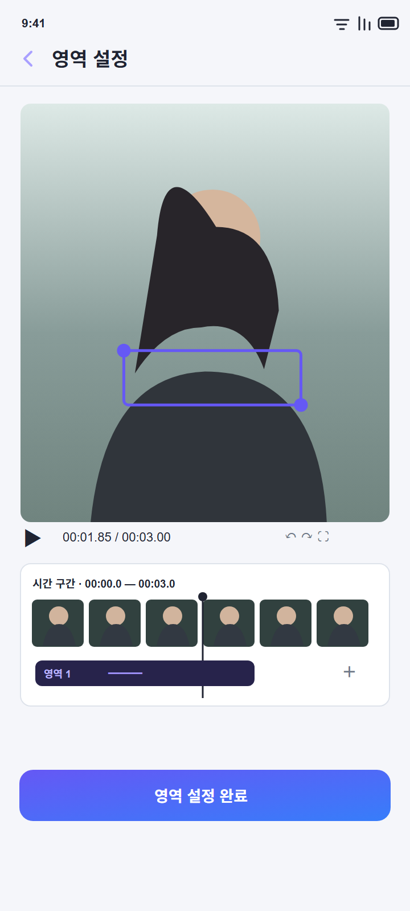
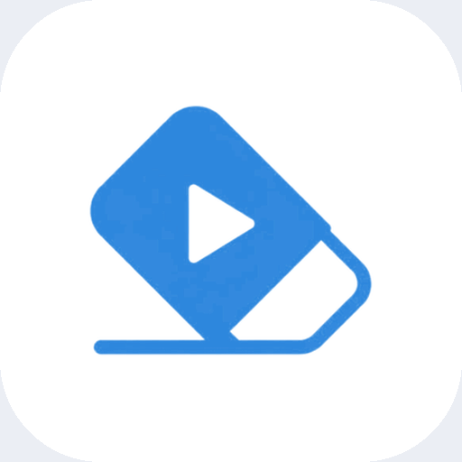
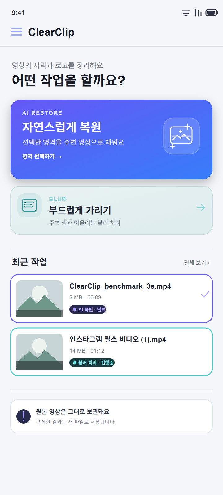
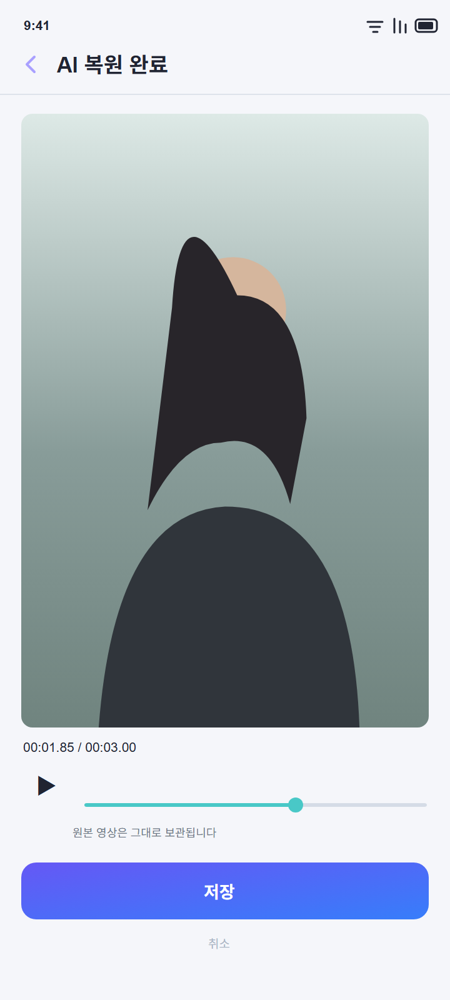

01 · SELECT
영역과 시간을 직접 지정
영상에서 사각형 영역을 옮기고 크기를 조절하세요. 여러 영역을 추가하고 영역마다 적용 구간을 정할 수 있습니다.

ClearClip영상에서 정리할 부분과 시간을 직접 고르고, 블러 또는 AI 복원으로 결과를 만드세요. 원본 영상은 그대로 두고 편집 결과를 새 파일로 저장합니다.

정리할 영역을 지정하고, 방식을 선택한 다음 결과를 확인해 저장합니다.

영상에서 사각형 영역을 옮기고 크기를 조절하세요. 여러 영역을 추가하고 영역마다 적용 구간을 정할 수 있습니다.
가볍게 가리고 싶을 때는 블러를, 선택한 부분을 주변 영상으로 채우고 싶을 때는 AI 복원을 선택하세요.

결과 영상을 재생하고 확인한 다음 저장합니다. 원본 파일은 덮어쓰지 않습니다.
영상 처리와 광고 SDK의 정보 이용에 관한 안내를 확인하세요.